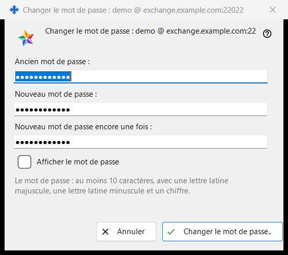
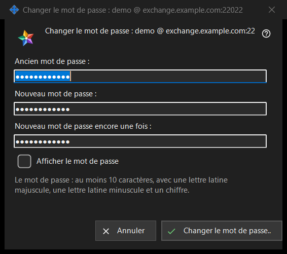

Changer le mot de passe
Objectif
Change le mot de passe du compte d'échange auquel ce PC est connecté. Elle s'ouvre par « Changer le mot de passe.. » dans le groupe « Compte d'échange » des paramètres du Share Manager, un bouton affiché uniquement lorsque le compte est connecté. Le titre de la fenêtre nomme le compte sous la forme identifiant @ serveur. La fenêtre n'envoie rien elle-même : elle vérifie ce que vous avez saisi et le renvoie, la connexion de ce PC l'envoie, et le serveur a le dernier mot.


Dans cet ordre
- Dans les paramètres du Share Manager, repérez le groupe « Compte d'échange » et cliquez sur « Changer le mot de passe.. ».
- Saisissez l'ancien mot de passe dans « Ancien mot de passe : ».
- Saisissez le nouveau mot de passe dans « Nouveau mot de passe : » et répétez-le dans « Nouveau mot de passe encore une fois : ».
- Cochez « Afficher le mot de passe » pour vérifier les trois champs.
- Cliquez sur « Changer le mot de passe.. » ; si une ligne d'avertissement apparaît, corrigez le champ et cliquez de nouveau.
- Lisez la réponse affichée dans le groupe.
Les éléments
Les trois champs
L'ancien mot de passe, le nouveau et le nouveau répété. Les trois sont masqués ; la case unique « Afficher le mot de passe » les révèle ensemble et n'est pas mémorisée. Les champs sont vidés à la fermeture de la fenêtre.
La règle du mot de passe
La ligne sous les champs dit : « Le mot de passe : au moins 10 caractères, avec une lettre latine majuscule, une lettre latine minuscule et un chiffre. » La fenêtre la vérifie aussitôt, ce qui vous donne une réponse avant tout envoi.
La ligne d'avertissement
Le bouton vérifie dans cet ordre : « Indiquez l'ancien mot de passe. », « Les deux mots de passe diffèrent. », puis la règle : « Le mot de passe est plus court que 10 caractères. », « Le mot de passe n'a pas de lettre latine majuscule. », « Le mot de passe n'a pas de lettre latine minuscule. », « Le mot de passe n'a pas de chiffre. ». Le premier problème arrête la vérification, la fenêtre reste ouverte et rien n'est envoyé.
Ce qui se passe après le clic
Une saisie valide ferme la fenêtre et le groupe affiche la réponse. Succès : « Le mot de passe est changé. Cet ordinateur continue de fonctionner, et les autres appareils du compte doivent se reconnecter. » Autres réponses : « L'ancien mot de passe est incorrect. », « Trop de tentatives. Attendez une minute et réessayez. », « Le serveur a refusé le changement de mot de passe. » et « Il n'y a pas de connexion au serveur. Connectez-vous et réessayez. ». Lorsque le serveur rejette un mot de passe faible, sa propre phrase est affichée.
Annuler et touches
« Annuler » ou Esc ferme la fenêtre sans rien changer ; Enter appuie sur « Changer le mot de passe.. ».
Paramètres du gestionnaire · Paramètres de partage SFTP · Paramètres du serveur d’échange